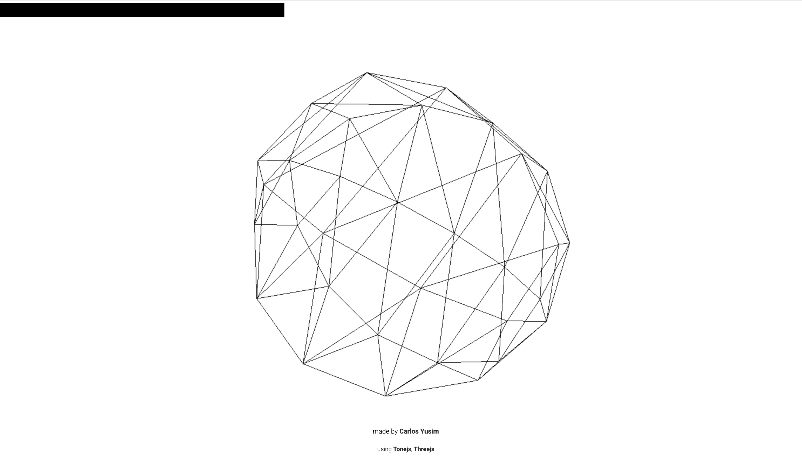
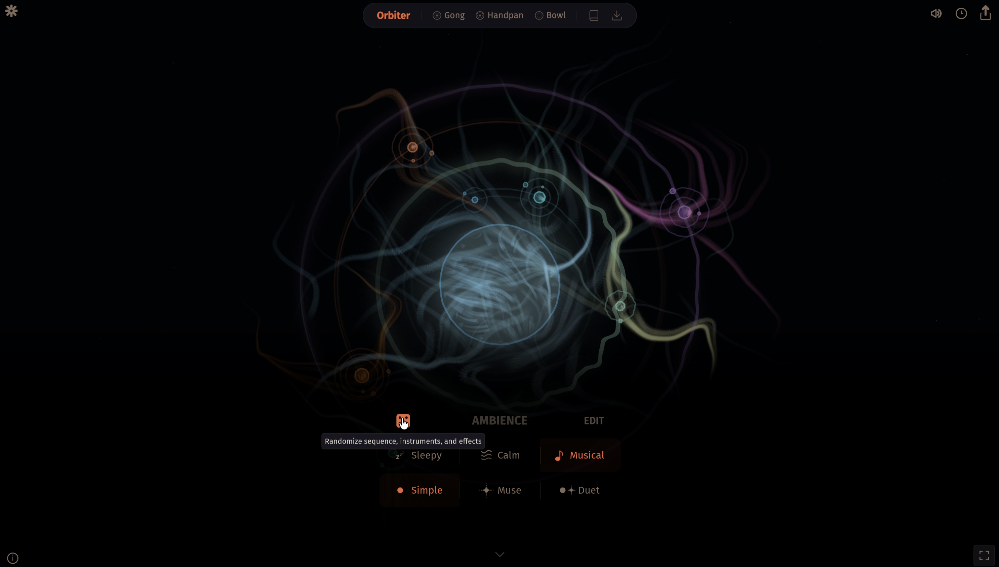

1. Design Scenario Analysis
Scenario: Dynamic Soundtrack-er
The Dynamic Soundtrack-er scenario requires a browser-based audio instrument which can generate an ongoing soundtrack for a particular activity or environment. Unlike traditional music players, the soundtrack should be able to respond to changes in the activity over time. Users may only interact with the instrument occasionally, but these interactions should still have a meaningful impact on the development of its soundtrack.
I'm interested in applying this scenario to reading. Reading is a long and continuously changing process, and the story may switch between calm, tense, emotional or exciting moments, while traditional background music usually remains unchanged.
Therefore, the purpose is to create a soundtrack that can adapt to the reader's experience without requiring constant attention. Rather than automatically deciding what sound a book should have, the instrument should allow readers to interpret the story themselves and occasionally convey changes in emotions or atmosphere.
The main values of this project are immersion, adaptability, coherence and reader agency. The soundtrack should support the reading experience without distraction. The change of sound should feel gradual and continuous, while allowing the reader to control the interpretation of thestory.
2. Project Overview
Synopsis
This project proposes a browser-based audio instrument for reading. Before starting, users need to choose the book’s genre and the initial atmosphere. While reading, users can occasionally update the current mood of the story, such as calm, mysterious, tense or emotional.
These inputs gradually reshape the soundtrack by changing combinations of ambient sound, rhythm, and musical texture. The instrument does not switch the whole song, but maintains a continuous soundscape that evolves as the reader's interpretation of the story changes.
This project will use Random as its extended technique. Randomness will be used in the preset music rules to create variations in sound combinations, rhythm and texture, allowing each reading session to develop differently and always fit the selected emotional tone.
Response to Purpose and Worth
The project responds to the Dynamic Soundtrack-er scenario by allowing the ongoing soundtrack to constantly change in the progress of the reading. Readers only need to provide occasional mood or atmosphere inputs, allowing the soundtrack to adapt without drawing attention away from the book.
Immersion will be achieved through continuous ambient and musical layers that respond to the atmosphere of the story without requiring the reader to search for new music.
Adaptability will be created through the interaction between the reader's input and the soundtrack. For example, choosing a tense atmosphere may introduce denser rhythms, lower frequencies or more unstable textures, while a calm atmosphere may reduce rhythm changes and use softer sounds.
Continuity is important because sudden changes could interrupt the reading experience. Therefore, sound layers will gradually transition, instead of suddenly stopping one soundtrack and starting another immediately.
Finally, reader agency is the core of this project. This instrument will not automatically analyze or interpret the book. Instead, readers decide how they understand the current atmosphere of the story. It is because readers may have different understandings of the same book, and their preferences for music in the process of reading may also be different.
3. Project Framing
Concept
The project is framed around the idea of reading as a continuous narrative experience rather than a static activity. The soundtrack will take inspiration from music used in movies or games, where changes reshape the feeling of the scene.
However, unlike movie or game soundtracks where the sequence is preset, the instrument depends on the reader's interpretation. Users act as a bridge between books and the audio system by occasionally updating the current feelings of the story.
Characterisation
The interface will be quiet, atmospheric and literary to support the reading atmosphere. It should be more like an ambient reading space than a professional music production interface. Therefore, dense control buttons, technical synthesizer terms and highly dynamic elements should be avoided. The current selected atmosphere can be reflected through subtle movements and visual changes.
The interaction should feel:
Calm - atmospheric - intuitive - immersive
Sound and Musical Framing
The soundtrack will be constructed from several types of sound layers:
- Ambient environmental sounds
- Sustained textures or pads
- Simple rhythmic elements
- Subtle melodic fragments
- Transitional sounds
This project will avoid using lyrical music and complex melodies, because these elements may disturb the reader's attention.
Extended Technique: Random
The project will use JavaScript's Math.random() as its extended technique.
Rather than generating completely unpredictable audio, the system will use controlled randomness. Each atmosphere will have a collection of preset sounds and musical behaviours. Then, randomness can determine:
- which ambient layer is introduced
- what kind of melody to play
- variations in rhythm
- small changes in texture
For example, when the reader selects mysterious, the system may randomly choose between several low ambient textures and sparse melodic fragments. All available options will still belong to the same overall musical character. This allows each reading experience to be slightly different without losing its connection to the selected narrative atmosphere.
User Interaction
Before starting a session, the reader will make a small number of initial choices:
Book genre → Initial mood → Start soundtrack
Once start reading, the interface becomes less visually demanding. Readers can occasionally update the atmosphere when they feel that the narrative has changed significantly.
Each input gradually modifies the existing soundtrack rather than replacing it. Readers can also use basic controls such as volume, pause and possible soundtrack intensity, but the interface will minimize the need for frequent interaction.
Included / Excluded
| Included | Excluded |
|---|---|
| Reader-selected book genre and atmosphere | Automatic analysis of book content |
| Continuous generative soundtrack | AI interpretation of books |
| Controlled Randomness | Book searching |
| Ambient sounds, rhythm and musical textures | Full song selection |
| Gradual transitions | Lyrical music |
| Basic controls | Complex controls |
Automatic text analysis was considered but has been excluded from the current framing. In addition to increasing technical complexity, this could reduce reader agency, as different readers may understand and experience the same narrative differently.
4. Interaction design analysis
Example 1: The Ultimate Jungle Noise Generator

Sound Layering and User Control
The Ultimate Jungle Noise Generator is a browser-based soundscape interface that allows users to combine and adjust different layers of environmental sound. Unlike selecting a complete audio track, users can shape the overall atmosphere by changing the balance between each sound layer.
I am especially interested in its layered sound effects and simple controls. Each layer can be adjusted independently, so users can freely control the sound effect without professional knowledge of music. This makes the interface easier to use than traditional synthesizers.
The continuity of sound is also closely related to my project. When the user makes changes, the sound scene does not need to start playing again, but different sound layers can be gradually enhanced or weakened, and the overall experience is still smooth. This is especially important for reading background music, because a sudden switch or complete replacement of the track may interrupt the reader's concentration.
Impact on my project:
This interface has influenced me to decide to build the reading soundtrack into multiple atmosphere, rhythm and texture levels instead of using complete songs. It also made me realize that users should be able to influence the sound effect without directly controlling each audio parameter.
Example 2: Holdspace

Minimal Interaction and Feedback
Holdspace creates a sound experience through a very simple interaction. What I'm interested in is that the interface does not require too many control buttons or continuous input from users. The interaction is easy to understand because the sound responds directly to the user's action.
This is relevant to my reading soundtrack because I do not want users to spend too much time interacting with the website while reading. When the atmosphere of the story changes, the interface should only need occasional input.
Impact on my project:
This has influenced me to keep the reading interface simple and use emotion selection as the main interaction. Users will not need to directly control each layer of sound effect, but their occasional choices will still create clear changes in the soundtrack.
Example 3: Vibe Chimes

Environmental Input and Visual Feedback
Vibe Chime is a browser-based interactive sound experience that generates environmental sound effects through virtual wind chimes. The control panel allows users to adjust factors such as chime character, wind, and time of day, while the interface can also use the user’s current location to reflect local environmental conditions.
What I am particularly concerned about is how the interface connects sound with environmental and visual changes. When the user adjusts the settings, the sound will change together with the change of the scene, such as the lighting and the overall atmosphere. This makes the interactive experience more immersive, because sound and visual elements respond together in the environment.
The location function is also interesting because it allows external information to affect the experience without requiring the user to adjust every setting.
Impact on my project:
Vibe Chimes has influenced my idea of linking sound changes with visual atmosphere. In my reading soundtrack, different emotions will not only affect the audio, but also be conveyed through subtle visual elements such as color, dynamics or lighting, helping readers understand the current state of soundtrack without adding complex controls.
Example 4: Orbiter

Generative Sound and Randomness
Orbiter is a browser-based generative ambient instrument that continuously creates evolving sound through the built-in generative sequencer. Users can allow the system to generate music randomly, or adjust sounds, modify patches and randomize parameters by themselves.
I pay special attention to the balance between automated generation and user control. Users do not need to create each note or rhythm. The system will continue to change after the initial interaction so that the sound can develop naturally for a long time without continuous attention.
This is very similar to my reading soundtrack: readers should not need to operate the interface continuously when reading. Once an emotion is selected, the system should be able to continue evolving the soundtrack independently. But the changes generated must remain within the tone, rather than becoming completely unpredictable.
Impact on my project:
Orbiter influenced me to think about how to use controlled randomness. My instrument will not use random generation of completely unrelated sounds, but will use randomness in preset ambient sounds, rhythms and textures. In this way, each performance will present a different development and maintain a consistent atmosphere.